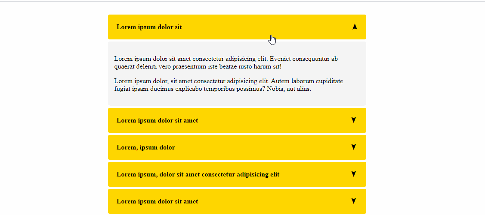
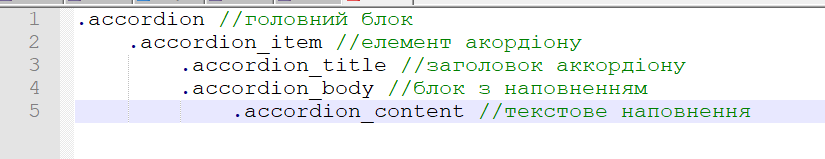
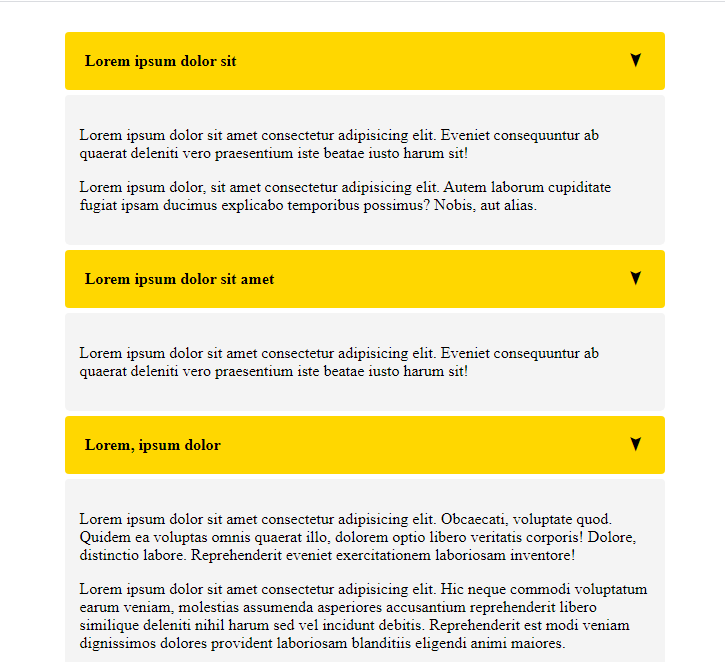
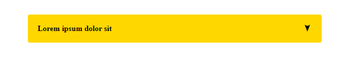

Тема 28.
1. Створіть акордіон виконуючи задання покроково.

2. Створіть верстку з такими вкладеннями стилів.


3. Створіть один елемент акордіону та функцію toggle_item якапри кліку на елемент аккордіону змінюватиме висоту .accordion_body з 0 до висоти наповнення блоку. Додайте анімації для зміни висоти блоку та обертання стрілки яка вказує на стан елементу акордіону.

4. Привяжіть до всіх елемнтів з класом .accordion_item функцію toggle_item.
5. При кліку на вибраний елемент у аккордіоні додавайте йому класс .isOpen (якщо він був не розгорунтий і навпаки). Використайте це для того, щоб згортати всі інші елементи якщо вони були відкритими.
Додатково
6. Відобразіть інформацію про вакзані компанії у акордіоні array.js